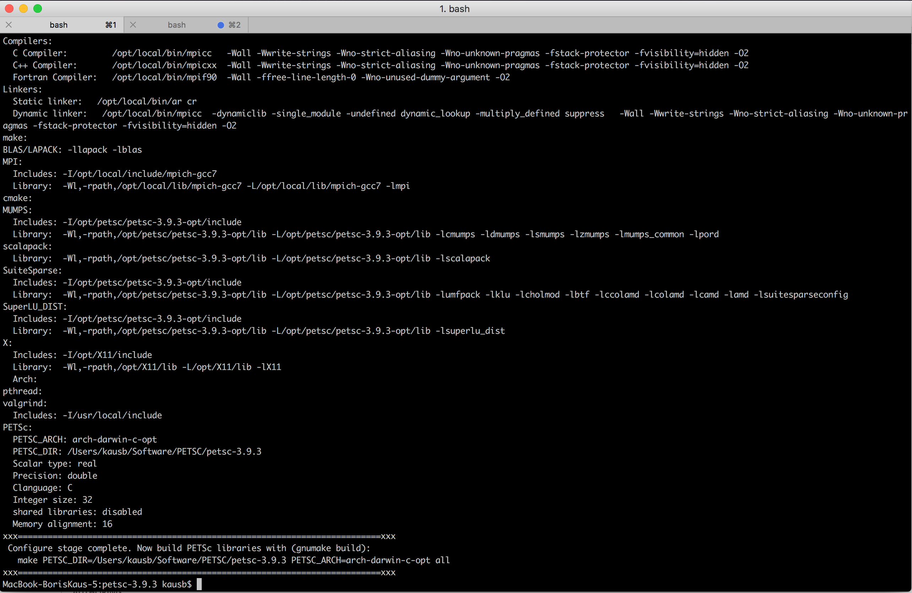
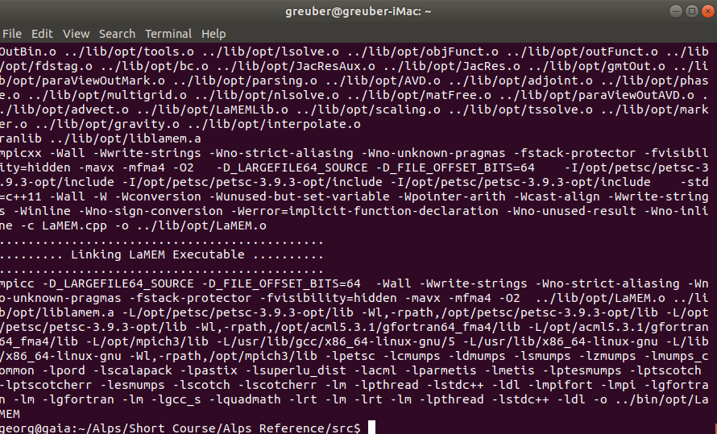
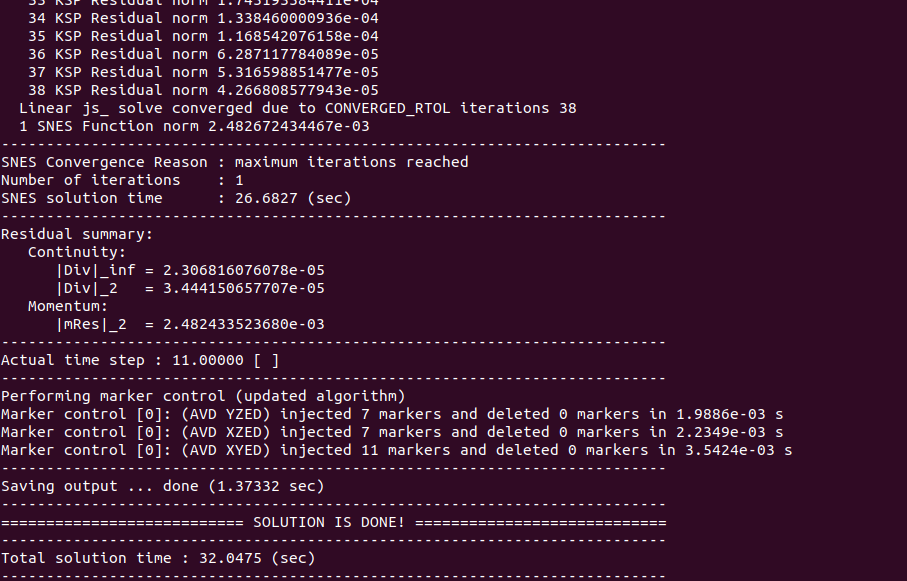
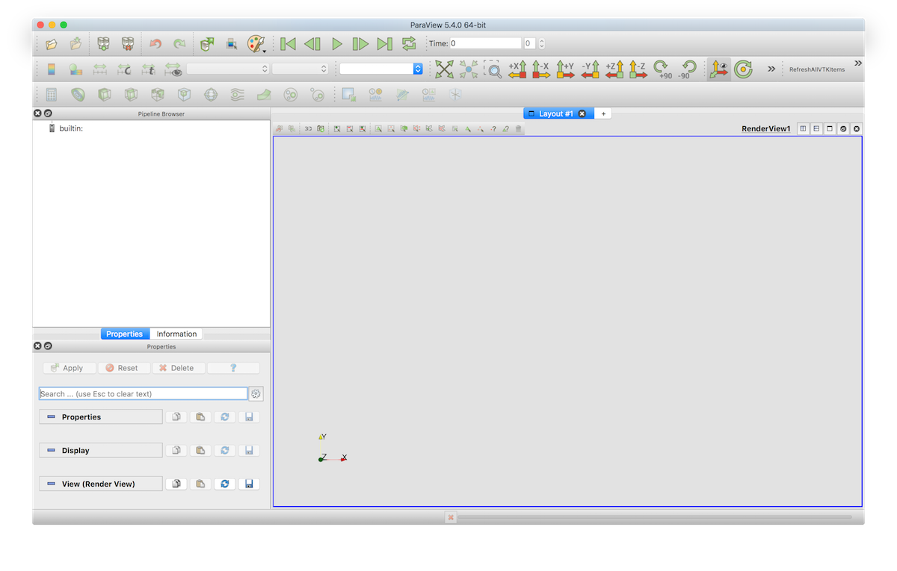

Installation
1.0 Precompiled binaries
The absolute simplest way to get LaMEM working on your system is to download pre-compiled libraries which are available for over 100 architectures and systems, including essentially all systems in use at the moment. You can install it through the julia package manager, and you can run it either through julia or through the terminal (after setting the correct path):
julia> ]
pkg> add LaMEM
pkg> test LaMEMMore details are given here. This will work fine on your local machine or server (including in parallel). Yet, if you are planning to use LaMEM on large parallel HPC clusters you (or your system administrator) may still need to compile PETSc.
1.1 Installation from source
LaMEM is build in top of PETSc, which provides great support for parallel solvers and grid infrastructure. Different than other codes used in geodynamics, LaMEM does not require an excessive amount of additional packages, except for the ones that can be downloaded through the PETSc installation system.
This installation guide was created based on initial input from Giovanni Mainetti and Andrea Bistacchi (University of Milano Bicocca), with input from the Mainz team (Andrea Picollo, Boris Kaus).
The LaMEM development team uses different approaches internally, and over years many aspects of installing PETSc and using LaMEM become easier. Yet if you ask us now (october 2020), what we recommend when you are a new user it would be the following:
- PETSc using the correct version, including the external packages SUPERLU_DIST, MUMPS, PASTIX and UMFPACK (Suitesparse). These are all direct solvers that we use for 2D simulations, or as coarse grid solvers, so they are useful to have. If you happen to have compilation errors with some of them (e.g., mumps), it is also ok to only have one direct solver.
- Python (3+ is best), to run the LaMEM testing suite.
- Microsoft Visual Studio Code, which is by far the best debugger/development environment at the moment. Useful plugins: C/C++ with Intellisense (debugging LaMEM code), Python, Remote SSH (great if you want to change LaMEM inut scripts on a remote server)
- Paraview for visualizations.
1.1.1 Prerequisites
We have tested LaMEM on Linux, Mac and Windows 10. The development team uses Mac and Linux, so these machines are best supported. As Windows 10 now has a (still experimental) bash shell (called WLS), you can install PETSc within this shell by following the Linux installation instructions.
1.1.2 Automated PETSc installation using Spack
The most complicated step in getting LaMEM running is to install the correct version of PETSc, on your laptop or cluster. Below we give more specific info if you want to do it yourself on Mac or Linux. Yet, an alternative and newer method to install PETSc and all required compilers on a new (linux/mac) machine or even on a complicated cluster is spack. It installs everything required and consistently with the same compilers in a separate directory and works quite well in our experience (including installing additional packages). A spack tutorial can be found here.
Brief instructions: You can install spack in your home directory with:
$ git clone https://github.com/spack/spack.git ~/spack
$ cd ~/spackAnd add environmental variables:
$ . share/spack/setup-env.sh Find the compilers you have
$ spack compilersGet info about the PETSc package that you can install:
$ spack info petscInstall PETSc with the correct packages, and leave out stuff we don't need. The optimized compilation of PETSc is installed with
$ spack install petsc@3.22.5 +mumps +suite-sparse -hypre -hdf5 -shared -debugIf that works out, you'll have to update your environmental variables and create the $PETSC_OPT$ variable
$ . share/spack/setup-env.sh
$ export PETSC_OPT=$(spack location -i petsc) You would have to redo the same for a debug version of PETSc to hve the full compilation up and running.
1.1.3 Manual PETSc installation
The alterative method is to install PETSc yourself. That is a bit more effort, but also enables you to install packages (like Pastix), that are not available in the spack distribution. Below we have installation instructions for Mac and Linux. On Windows, uses the WSL and follow the linux instructions.
1.1.3.1 Mac
On Mac, you will need to ensure that Xcode and the Xcode command line tools are installed. It is also a good idea to install compilers and MPI using a package manager. One possibility is to install MacPorts, and install compilers with:
$ sudo port install gcc7and make it the default compilers
$ sudo port select --set gcc gcc7Next, install the MPI library MPICH with:
$ sudo port install mpich-gcc7-fortranand make it the default with
$ sudo port select --set mpi mpich-gcc7-fortranYou may easily have several other compilers installed on your Mac. For a correct installation of PETSc, you will need to ensure that all compilers point to the correct version (in the example above, gcc7 installed from MacPorts). Test this with
$ mpif90 --version
$ mpicc --version1.1.3.2 Linux
These instructions have been tested with Ubuntu. Make sure that your packages are installed correctly and are up to date, with:
$ sudo apt updateIf needed, update all outdated packages with
$ sudo apt dist-upgrade1.1.3.3 Python
Make sure that both python 3.0 and python 2.7 is installed, for example by typing
$ which pythonIf it is not installed, change that which can be done on Linux with:
sudo apt install python2.7 python-pipor on Mac, for example, by installing the anaconda package. Alternatively, you can install the Macports package manager and install it with
sudo port install python271.1.3.4 Compilers and various other packages
PETSc will need fortran and C compilers. Which fortran compiler you use is not all that important, so you are welcome to use gcc and gfortran. Once you are a more experienced LaMEM user and do production runs, you might want to try different options to see if this speeds up the simulations. In addition to the compilers, it is a good idea to install git and cmake as well.
On linux this can be done with
$ sudo apt update
$ sudo apt install gfortran gcc git cmakeand on Mac, using macports
$ sudo port selfupdate
$ sudo port install gfortran gcc git cmake1.1.3.5 PETSc
The most important package for LaMEM is PETSc. If you just want to give LaMEM a try, the most basic installation is sufficient. Once you do production runs, it is worthwhile to experiment a bit with more optimized solver options. Installing PETSc with those does not always work, but PETSc has a very responsive user list which is searchable, and where you can post your questions if needed. As PETSc regularly changes its syntac, LaMEM is always only compatible with a particular version of PETSc. This is typically updated once per year.
The current version of LaMEM is compatible with PETSc 3.22.5 We have also successfully compiled LaMEM with PETSc 3.23.x so you are also welcome to use that, but our Github actions CI testing environment uses 3.22.5 at the moment.
You can download the PETSc version you need here. Do that and unzip it with
$ tar -xvf petsc-3.22.5.tar.gzChange to the PETSc directory from the command window, for example with:
$ cd ~/Software/PETSc/petsc-3.22.5and specify the PETSC environmental variable:
$ export PETSC_DIR=$PWDThe simplest installation of PETSc can be configured as follows (assuming you are in the PETSc directory). This will automatically download and install the MPI library as well, together with a few other packages we will use.
$ ./config/configure.py --prefix=/opt/petsc/petsc-3.22.5-opt --download-mpich=1 --download-superlu_dist=1 --download-mumps=1 --download-scalapack=1 --download-fblaslapack=1 --with-debugging=0 --FOPTFLAGS=-O3 --CXXOPTFLAGS=-O3 --COPTFLAGS=-O3 --with-shared-libraries=0 --download-cmakeThis will install an optimized (fast) version of PETSc on your system in the directory opt/petsc/petsc-3.22.5-opt. You can change this directory, obviously, but in that case please remember where you put it as we need it later.
If you want to have more control over PETSc and use the MPI version that you installed earlier on your system, using the package manager (see above), you can install it as:
$ ./config/configure.py --prefix=/opt/petsc/petsc-3.22.5-opt --download-superlu_dist=1 --doCleanup=1 --download-mumps=1 --download-suitesparse=1 --download-scalapack=1 --download-fblaslapack=1 --FOPTFLAGS=-O3 --CXXOPTFLAGS=-O3 --COPTFLAGS=-O3 --with-shared-libraries=0 --download-cmake --with-debugging=0 --with-mpi-include=/opt/local/include/mpich-gcc7/ --with-cc=/opt/local/bin/mpicc --with-cxx=/opt/local/bin/mpicxx --with-fc=/opt/local/bin/mpif90 --with-mpi-lib=/opt/local/lib/mpich-gcc7/libmpi.aNote that the above lines assume that mpi is installed under the directory /opt/local/bin/. You can check that this is the case for you as well by typing
$ which mpiexecwhich should give you the dirtectory /opt/local/bin/mpiexec. If it gives you a different directory, you will have to use that directory in the PETSc configuration listed above. Both methods discussed above will install the parallel direct solvers MUMPS and SUPERLU_DIST. LaMEM will also work without these parallel solvers, but we find them particularly useful for 2D simulations and as coarse grid solvers.
After the configuration step has finished succesfully (which will take some time), it should look something like 
Next, make PETSc with:
$ make PETSC_DIR=/Users/kausb/Software/PETSC/petsc-3.22.5 PETSC_ARCH=arch-darwin-c-opt allAfter that, you will be asked to install PETSc
sudo make PETSC_DIR=/Users/kausb/Software/PETSC/petsc-3.22.5 PETSC_ARCH=arch-darwin-c-opt installand test whether the installation works with
$ make PETSC_DIR=/opt/petsc/petsc-3.22.5-opt PETSC_ARCH="" checkThis will run a few test cases and if all is well, will tell you so.
If you only run simulations with LaMEM, the optimized version of PETSc described above will be sufficient. Yet, if you also develop routines and have to do debugging, it is a good idea to also install the debug version:
$ ./config/configure.py --prefix=/opt/petsc/petsc-3.22.5-deb --download-superlu_dist=1 --doCleanup=1 --download-mumps=1 --download-suitesparse=1 --download-scalapack=1 --download-fblaslapack=1 --FOPTFLAGS="-O0 -g" --CXXOPTFLAGS="-O0 -g" --COPTFLAGS="-O0 -g" --with-shared-libraries=0 --download-cmake --with-debugging=1 --with-mpi-include=/opt/local/include/mpich-gcc7/ --with-cc=/opt/local/bin/mpicc --with-cxx=/opt/local/bin/mpicxx --with-fc=/opt/local/bin/mpif90 --with-mpi-lib=/opt/local/lib/mpich-gcc7/libmpi.aCompared to before, we have three changes, namely:
- That the prefix (or the directory where PETSc will be put) is changed to
--prefix=/opt/petsc/petsc-3.22.5-deb - We tell it to compile a debug version of PETSc with
--with-debugging=1 - We change the optimization flags to
--FOPTFLAGS="-O0 -g" --CXXOPTFLAGS="-O0 -g" --COPTFLAGS="-O0 -g"
With this you can repeat the procedure above. Just for completion, the simple configute option of above in debug mode would thus be:
$ ./config/configure.py --prefix=/opt/petsc/petsc-3.22.5-deb --download-mpich=1 --download-superlu_dist=1 --download-mumps=1 --download-scalapack=1 --download-fblaslapack=1 --download-cmake --with-debugging=1 --FOPTFLAGS="-O0 -g" --CXXOPTFLAGS="-O0 -g" --COPTFLAGS="-O0 -g" --with-shared-libraries=01.1.4 Installing PETSc on a cluster
Chances exists that you want to install PETSc on a cluster. The main point to take into account is that you need to link it against the appropriate MPI compilers.
If you are lucky, a previous version of PETSc exists already on the cluster and you want to reinstall it in your home directory while adding some new packages such as SUPERLU_DIST or MUMPS. In that case, there is simple trick to find out the exact options that were used to compile PETSc on the cluster:
- Compile one of the PETSc examples, for example
ex1in the PETSc directory under/src/ksp/ksp/examples/tutorials - Run it, while adding the command-line option
-log_view - At the end of the simulation, it will show you the command-line options that were used to compile PETSc. These can be long; for us it was:
Configure options: --prefix=/cluster/easybuild/broadwell/software/numlib/PETSc/3.22.5-intel-2018.02-downloaded-deps --with-mkl_pardiso=1 --with-mkl_pardiso-dir=/cluster/easybuild/broadwell/software/numlib/imkl/2018.2.199-iimpi-2018.02-GCC-6.3.0/mkl --with-hdf5=1 --with-hdf5-dir=/cluster/easybuild/broadwell/software/data/HDF5/1.8.20-intel-2018.02 --with-large-io=1 --with-c++-support=1 --with-debugging=0 --download-hypre=1 --download-triangle=1 --download-ptscotch=1 --download-pastix=1 --download-ml=1 --download-superlu=1 --download-metis=1 --download-superlu_dist=1 --download-prometheus=1 --download-mumps=1 --download-parmetis=1 --download-suitesparse=1 --download-hypre-shared=0 --download-metis-shared=0 --download-ml-shared=0 --download-mumps-shared=0 --download-parmetis-shared=0 --download-pastix-shared=0 --download-prometheus-shared=0 --download-ptscotch-shared=0 --download-suitesparse-shared=0 --download-superlu-shared=0 --download-superlu_dist-shared=0 --with-cc=mpiicc --with-cxx=mpiicpc --with-c++-support --with-fc=mpiifort --CFLAGS="-O3 -xCORE-AVX2 -ftz -fp-speculation=safe -fp-model source -fPIC" --CXXFLAGS="-O3 -xCORE-AVX2 -ftz -fp-speculation=safe -fp-model source -fPIC" --FFLAGS="-O2 -xCORE-AVX2 -ftz -fp-speculation=safe -fp-model source -fPIC" --with-gnu-compilers=0 --with-mpi=1 --with-build-step-np=4 --with-shared-libraries=1 --with-debugging=0 --with-pic=1 --with-x=0 --with-windows-graphics=0 --with-fftw=1 --with-fftw-include=/cluster/easybuild/broadwell/software/numlib/imkl/2018.2.199-iimpi-2018.02-GCC-6.3.0/mkl/include/fftw --with-fftw-lib="[/cluster/easybuild/broadwell/software/numlib/imkl/2018.2.199-iimpi-2018.02-GCC-6.3.0/mkl/lib/intel64/libfftw3xc_intel_pic.a,libfftw3x_cdft_lp64_pic.a,libmkl_cdft_core.a,libmkl_blacs_intelmpi_lp64.a,libmkl_intel_lp64.a,libmkl_sequential.a,libmkl_core.a]" --with-scalapack=1 --with-scalapack-include=/cluster/easybuild/broadwell/software/numlib/imkl/2018.2.199-iimpi-2018.02-GCC-6.3.0/mkl/include --with-scalapack-lib="[/cluster/easybuild/broadwell/software/numlib/imkl/2018.2.199-iimpi-2018.02-GCC-6.3.0/mkl/lib/intel64/libmkl_scalapack_lp64.a,libmkl_blacs_intelmpi_lp64.a,libmkl_intel_lp64.a,libmkl_sequential.a,libmkl_core.a]" --with-blaslapack-lib="[/cluster/easybuild/broadwell/software/numlib/imkl/2018.2.199-iimpi-2018.02-GCC-6.3.0/mkl/lib/intel64/libmkl_intel_lp64.a,libmkl_sequential.a,libmkl_core.a]" --with-hdf5=1 --with-hdf5-dir=/cluster/easybuild/broadwell/software/data/HDF5/1.8.20-intel-2018.02- Use the same options for your latest installation, while adding config options you may need.
1.1.5 Download and compile LaMEM
Once you successfully installed the correct version of PETSc, installing LaMEM should be straightforward. You can download the latest version of LaMEM with
git clone https://github.com/UniMainzGeo/LaMEM.git ./LaMEMNext you need to specify the environmental variables PETSC_OPT and PETSC_DEB:
export PETSC_OPT=/opt/petsc/petsc-3.22.5-opt
export PETSC_DEB=/opt/petsc/petsc-3.22.5-debNote that this may need to be adapted, depending on the machine you use. You may also want to specify this in your .bashrc files.
Next you can install an optimized version of LaMEM by going to the /src directory in the LaMEM directory, and typing:
make mode=opt allAt the end of the installation, it should look like: 
Similarly, you can install a debug version of LaMEM with
make mode=deb allThe binaries are located in:
/LaMEM/bin/opt/LaMEM
/LaMEM/bin/deb/LaMEMYou have succesfully installed LaMEM and should try if everything works correctly by running the tests:
$cd ../tests
$make testThe first time you do this, it will download the python package pyTestHarness, by Dave May and Patrick Sanan, which we use for testing. If it fails to download it autimatically, you may have to download it manually.
Next, we start the python script runLaMEM_tests.py which runs the test-suite. The summary at the end should only show passed tests.
If this works, we are ready to run a first simulation. Navigate to the following directory:
$cd ../input_models/BuildInSetupsThe *.dat files in that directory (list them with typing ls on the command-line) are standard LaMEM input files. To start a simulation the only thing to do is to call the code:
$mpiexec -n 1 ../../bin/opt/LaMEM -ParamFile FallingSpheres_Multigrid.dat which should looke like: 
1.2. Visualization
The output of LaMEM is in VTK format, which can be read and visualized with any software that can handle this filetype. For us, the our choice of code is Paraview, which is very well maintained package that runs on all systems, and even allows you to do parallel rendering. We usually simply download the binaries from the webpage. If you want to render on a large-scale cluster instead, we recommend that you buy your system administrator a beer.
After opening, paraview looks like this:

You can open a LaMEM simulation by opening the *.pvd files in the directory from where you started the simulation. Hitting the "play" button will show you an animation of all available timesteps.
1.2.1. Linux - Graphics card
Having the correct graphics card is important to have Paraview run efficiently and create output. Paraview will also run without graphics card, but not quite as smoothly. These instructions apply to workstations with Nvidia graphic cards. To check if your Nvidia driver is updated, type:
$ ubuntu-drivers devicesThis results in a list of devices where you should see your Nvidia graphic card and drivers, e.g.:
$ == /sys/devices/pci0000:00/0000:00:05.0/0000:02:00.0 ==
$ modalias : pci:v000010DEd00001180sv00001043sd0000842Ebc03sc00i00
$ vendor : NVIDIA Corporation
$ model : GK104 [GeForce GTX 680]
$ driver : nvidia-340 - distro non-free
$ driver : nvidia-driver-396 - third-party free recommended
$ driver : nvidia-driver-390 - third-party free
$ driver : nvidia-304 - third-party free
$ driver : xserver-xorg-video-nouveau - distro free builtinTo install the recommended driver for your card, type:
$ sudo ubuntu-drivers autoinstallAlternatively to install a specific driver (e.g. nvidia-340):
$ sudo apt install nvidia-340Then reboot to use the new driver.